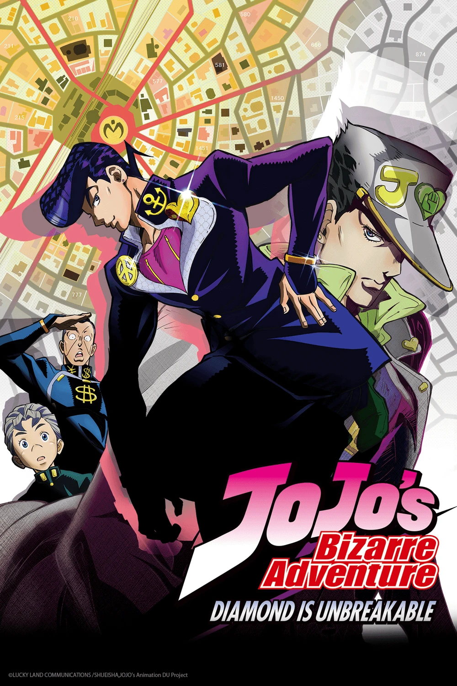

JoJo's Bizarre Adventure: Diamond is Unbreakable

info
JoJo's Bizarre Adventure: Diamond is Unbreakable (ジョジョの奇妙な冒険 ダイヤモンドは砕けない JoJo no Kimyō na Bōken Daiyamondo wa Kudakenai) is the third season of the JoJo's Bizarre Adventure TV Anime, produced by David Production.
Season 3 adapts the 4th arc of JoJo's Bizarre Adventure, Diamond is Unbreakable. It was confirmed at the end of "The Last Crusaders" event for the JoJo's Bizarre Adventure: Stardust Crusaders anime in Tokyo on October 24, 2015. The first episode aired on April 1, 2016. An original video animation (OVA) titled Thus Spoke Kishibe Rohan was made available to those who purchased every Blu-Ray disc release of the series.
Media distribution services Crunchyroll and Viz had obtained the streaming license for the anime, which are available for viewing at Crunchyroll's website and Viz's website respectively.
On July 6, 2018, it was confirmed[1] that the English dub had been scheduled to air on Adult Swim. The season began its broadcasting on Toonami on Saturday, August 18, 2018.